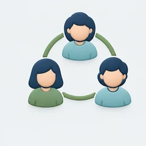
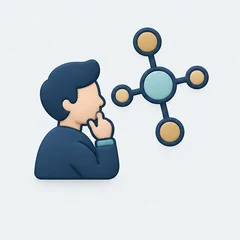

Local businesses
Explore everyday questions and share what you learn.


A community taking shape
A local community bringing people together to learn, share experiences and explore AI.
Explore what this could mean for youDifferent backgrounds. Shared curiosity. People with experiences and questions we can learn from.
Lopburi AI Collective is an emerging community for people curious about AI, from first-time learners to those with practical experience.
We’re shaping a place for free learning sessions, shared demonstrations, local conversations and community activities. Based in Lopburi, with connections across Upper Central Thailand.
Different backgrounds. Shared curiosity. Room to learn from one another.
Explore everyday questions and share what you learn.
Exchange ideas for useful, responsible AI in local services.

Bring a shared interest or a project to explore together.

Get started, share skills or help others learn.
Whatever your background, there’s room to join in.
Explore community activitiesWe’re an emerging community of people curious about AI. Free training and seminars, shared activities, local partnerships and casual meetups give us ways to learn from one another and shape the collective together.
Free training
Friendly sessions to explore AI tools, practise useful skills and ask questions. Beginners are welcome.
Seminars & conversations
Free talks and discussions where community members share experiences, useful examples and questions about AI.
Shared activities
Demonstrations, practical exercises and small community projects shaped by the interests of the people taking part.
Community partnerships
Connect with local groups, businesses, public-service participants and learning spaces to share knowledge and support community activities.
Casual meetups
Informal gatherings to meet other AI enthusiasts, exchange ideas and get to know the people behind the collective.
You don’t need to represent an organisation or have technical experience. Bring your curiosity, your perspective or something you’d like to share.
See what’s taking shapeGetting together
Our first gatherings are being planned. The ideas below are starting points, not confirmed events. Dates, venues and participation details will appear here when agreed.

An informal introduction to the collective: meet one another, share interests and suggest activities.

A free introductory learning session with practical examples, questions and shared exploration.
Choose what feels relevant to you. Bring a question, share an experience or explore something new with the community.
For local businesses
Bring a repeated task, a communication challenge or a question about AI. A real example gives a conversation somewhere useful to begin.
Bring a business questionExplore drafting, sorting and summarising routine material, with people checking the result.
Look at clearer replies, translation and content workflows that still sound like your organisation.
Consider how reports and existing records could become easier to understand, with attention to data quality and privacy.
For public service teams
Begin with a service need and the boundaries that matter. Officers and subject experts can bring the context that a technology demonstration alone cannot provide.
Bring a public service questionExplore clearer explanations, translation and navigation of information already approved for public use.
Discuss drafting and summarising using permitted material, with review and accountability built into the process.
Compare privacy, reliability and oversight considerations before choosing a small, low-risk experiment.
For community groups
Bring a community question or a project idea. Explore how AI might support the people, activities and connections that matter to your group.
Share a community ideaExplore translation, information access and the routine coordination work that uses volunteer time.
Try ideas for organising gatherings, preparing useful materials and making participation easier.
Start with a shared local question and explore a small project using non-sensitive sample material.
For beginners and experienced members
You do not need a technical background. Ask a first question, practise alongside others or share a skill that helps someone get started.
Find a learning activityTry everyday AI tools in friendly sessions, with time for questions and checking the results.
Bring a useful example, explain what you learned and help another member try it.
Explore a demonstration or a small prototype together, including its limits and where human judgement matters.
Our interests, experiences and local knowledge help shape what we explore together.
Bring a question, an idea or a practical skill. Tell us a little about yourself and what interests you.
Understand
What interests you? What would you like to learn, share or explore with others?
Explore
Try examples and demonstrations together. Share what works, discuss limitations and check the results.
Take the first step
Tell us a little about yourself and one question or idea you would like to explore. We’re still shaping the community, and your interests can help guide what comes next.
04 Help shape the collective
A question from everyday life, work or your community. A practical skill. A perspective we haven’t heard yet.
We are preparing our first gatherings. Curious individuals, local businesses, people in public service, community groups and AI practitioners are welcome to help shape what comes next.
Bring your curiosity. Let’s explore it together.
EnquiriesQuestions, partnerships or general enquiries
FAQ demo · community information